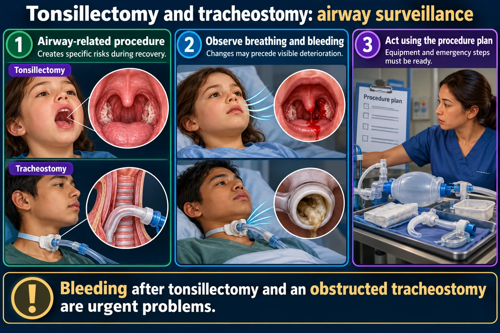

🦠 Tonsillectomy, Tracheostomy & Rheumatic Fever
The bleeding you cannot see, the airway you must keep open, and the sore throat that damages heart valves.
🚨 After tonsillectomy — watching for the bleed

The bleed you cannot see. And the second window at 7 to 10 days, when the scab separates, is the one families are not warned about.
Bleeding after tonsillectomy and an obstructed tracheostomy are urgent problems.
Read the picture
Airway-related procedure
Creates specific risks during recovery.
Observe breathing and bleeding
Changes may precede visible deterioration.
Act using the procedure plan
Equipment and emergency steps must be ready.
After tonsillectomy
Frequent swallowing, fresh bleeding or respiratory distress needs prompt review.
Tracheostomy care
Assess patency, secretions, skin and securement; maintain the emergency equipment plan.
Family teaching
Practice routine care and the prescribed response to obstruction or dislodgement.

The classic sign of post-tonsillectomy bleeding is FREQUENT SWALLOWING. Blood runs down the back of the throat, so there is nothing to see.
A child who keeps swallowing, or is unusually quiet and pale, is bleeding until proven otherwise. Look at the back of the throat with a torch and report immediately.
| Watch for | Why |
|---|---|
| Frequent swallowing | The earliest sign of bleeding |
| Restlessness, pallor, rising pulse | Blood loss before BP drops |
| Vomiting bright red blood | Active bleeding — old dark blood may be swallowed blood |
| Clearing the throat repeatedly | Same reason as swallowing |
Highest risk: the first 24 hours, and again at 7–10 days when the scab separates.
✅ Positioning and comfort
- Prone or side-lying while sleepy — lets secretions drain out of the mouth
- Ice collar; cool clear fluids once awake
- Soft, cool, bland diet — ice lollies, jelly, cool soup
- Analgesia around the clock; children under-eat when it hurts and then get dehydrated
🚨 Avoid completely
- No straws, no forks, nothing sharp or pointed in the mouth.
- No coughing, clearing the throat, gargling or blowing the nose.
- No red or brown fluids - they look like blood and hide real bleeding.
- No milk or ice cream at first - they thicken secretions and make the child clear the throat.
- No aspirin or NSAIDs - they increase bleeding. Acetaminophen only.
🫁 Tracheostomy care in a child

A child’s tracheostomy tube is small, so it blocks easily. Humidification and suctioning are not optional extras — they are what keeps it open.
🚨 At the bedside, always
- A spare tube the same size and one size smaller
- Obturator, tracheal dilator, suction equipment, oxygen
- Scissors and spare ties
If the tube comes out, you replace it. That is why the spare is taped above the crib - there is no time to fetch one.
✅ Suctioning
- Only as needed, not on a routine schedule — suctioning irritates and causes more secretions
- Signs it is needed: noisy or bubbly breathing, restlessness, falling saturations, visible secretions
- Hyperoxygenate first if the child tolerates it
- Apply suction only on withdrawal; 5 seconds in a child, no more than 10
- Insert only to the pre-measured depth — deeper damages the mucosa
- Allow recovery between passes
Two people change the ties — one holds the tube while the other works. One finger should fit under the ties.
Humidify everything. The tube bypasses the nose, which normally warms and moistens air. Dry air produces thick plugs, and a plug in a pediatric tube is an emergency.
💕 Rheumatic fever
An untreated group A strep throat can trigger an immune reaction that attacks the heart, joints, skin and brain — typically 2–4 weeks after the sore throat.
The heart valve damage is the part that lasts a lifetime - most often the mitral valve.

| Major sign | Looks like |
|---|---|
| Carditis | New murmur, tachycardia at rest, chest pain — the one that matters |
| Polyarthritis | Migratory — moves from joint to joint; large joints, very painful |
| Sydenham chorea | Purposeless jerky movements, emotional lability, clumsiness |
| Erythema marginatum | Pink ring-shaped rash on the trunk |
| Subcutaneous nodules | Painless firm lumps over bony prominences |
Supported by a raised ASO titre, raised ESR and CRP, and a prolonged PR interval.
✅ Care and the crucial teaching
- Penicillin to clear any remaining strep; anti-inflammatories for the joints
- Bed rest during active carditis
- Support the child through chorea — it is involuntary and resolves; protect from injury
Long-term prophylactic antibiotics continue for YEARS - often into adulthood - because a second attack causes far worse valve damage.
Prevention is the whole point: culture a sore throat, and finish the entire course. That single message prevents rheumatic heart disease.
🎯 NCLEX traps
- Frequent swallowing after tonsillectomy = bleeding
- No straws, no red fluids, no coughing or gargling
- Suction only on withdrawal, 5 seconds, pre-measured depth
- Spare trach tubes at the bedside, one same size and one smaller
- Migratory joint pain + new murmur after a sore throat = rheumatic fever
- Prophylaxis continues for years
Tonsillitis and Abscess
Simple Nursing original handout · saved in your Drive.